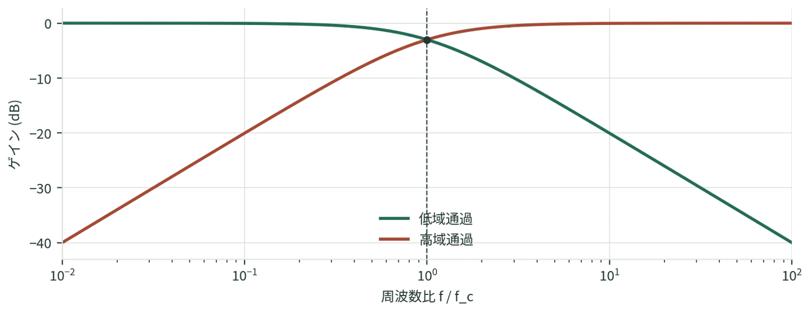

第40章 RCとライン出力を計算する
RCフィルタの計算と、Pico をライン入力へ安全につなぐアダプター。
この章で学ぶこと
- GPIO にスピーカーを直結してはいけない理由を、数字で理解する
- RC低域通過・高域通過の遮断周波数を計算する
- 抵抗とコンデンサで、ライン入力用のアダプターを作る
デジタル端子の出力と、電気的な負荷
Picoの発音端子とコーン型スピーカーをつなぐと、スピーカーの公称インピーダンスが8 Ωだとして A という静的な概算になり、マイコン端子の用途と桁が違う。実際の端子電圧、コイル、直列抵抗を入れるとこの単純計算からも外れる。回路設計では、仕様書の出力レベル、許容電圧、負荷、電流、放熱を別々に確認する。前の製作で負荷を受動ピエゾ＋直列抵抗に限定したのは、そのためである。 RP2040 S47
容量 の理想コンデンサの瞬時電流を とすれば 。正弦波の複素表示で、虚数単位 と電流の複素振幅 を用いると なので、インピーダンスは 。この表現を用いると、交流に対する抵抗と容量の分圧を、定常信号の周波数ごとに計算できる。
低域通過と高域通過
電圧源から直列に抵抗 、続いて接地へ容量 を置き、容量に掛かる電圧を出力とする。負荷が十分高インピーダンスであるとき、分圧より よって振幅比 。 となる周波数は 。 と の位置を逆にして抵抗で出力を取れば 。DCで低域通過は1、高域通過は0、高周波側ではそれが逆になる。

kΩ、 nF なら µs、 Hz。3.3 V駆動の矩形波を流して容量の両端を高インピーダンス入力で観測すると、発音周波数が440 Hzの場合、基音は通過域付近にあり、3次部分音1320 Hzはさらに減る。第26章の理想矩形波はAC成分が主題だったが、GPIOの 0 V と3.3 V の矩形波には、デューティ比が50%なら平均1.65 VのDC成分もある。低域通過だけではDCは消えない。
追加製作 Picoから高インピーダンスのライン入力へ
完成した基板の GP15 から、PicoのUSBを外した状態で次の受動アダプターを作る。R1は100 kΩ、R2は10 kΩ、結合用Cは無極性1 µF。受け側は入力インピーダンス10 kΩ以上の通常のアンバランス・ライン入力とする。ライン入力の信号端子はCを介して接続し、信号GNDをPicoのGNDに接続する。手持ちの機器の端子仕様が明確な場合に使う。マイク入力、ファンタム電源、ヘッドホン出力、スピーカー端子はこの回路の接続先に含めない。
| 部品・節点 | 配線 |
|---|---|
| R1 | GP15–X |
| R2 | X–Pico GND |
| C | X–ライン入力の信号端子 |
| 参照電位 | Pico GND–ライン入力GND |
配線上の検査では、USBを外し、R1とR2の取り違えを確認する。信号ケーブルをつなぐ前に、ピンの短絡がないか確認する。ライン側の入力を最低近くから調整し、クリップ表示が出ない範囲で録音する。電源、受け側の端子仕様、共通GNDが確認できない機器を使用しない。
例・計算
計算。 DCでCは遮断され、Xの HIGH は V。十分高い交流周波数でCを短絡と近似し、入力10 kΩなら下側抵抗は 。交流の振幅は矩形波の元の3.3 Vピーク間に対し約0.157 Vピーク間。Cの見るテブナン抵抗は、信号側の kΩと入力側の10 kΩの和。遮断周波数は約8.34 Hz。入力が大きければ、ピーク間は0.3 Vへ近づく。ケーブルや端子、GPIOの実際の出力特性はこの計算に含めていない。ライン経由の音とピエゾ経由の音の差は、電気波形から空気振動への変換器が違うことを耳で調べる実習になる。
ここだけ押さえる
- 遮断周波数は fc = 1/(2πRC)。10 kΩ と 22 nF なら約723 Hz。
- 0 V と 3.3 V の矩形波には直流成分がある。コンデンサで切る。
- マイク入力・ヘッドホン出力・スピーカー端子にはつながない。